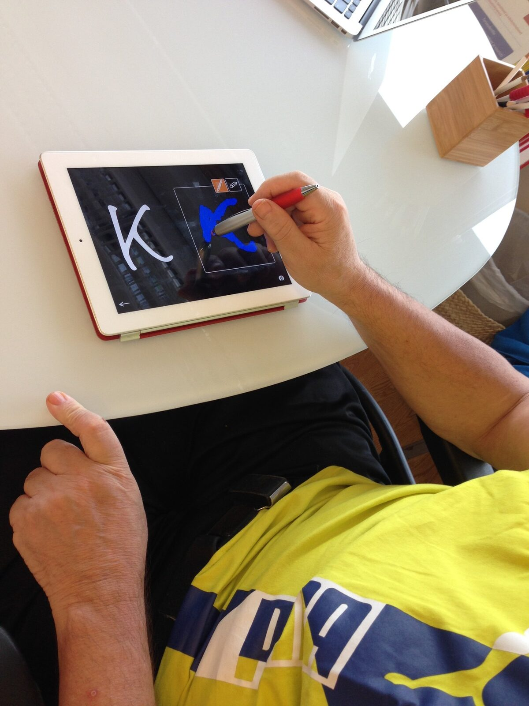
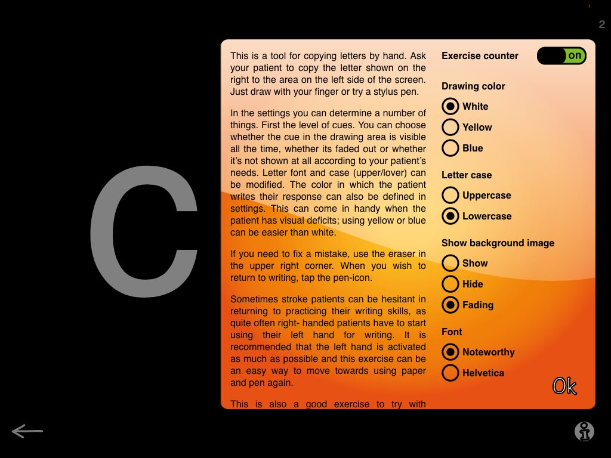
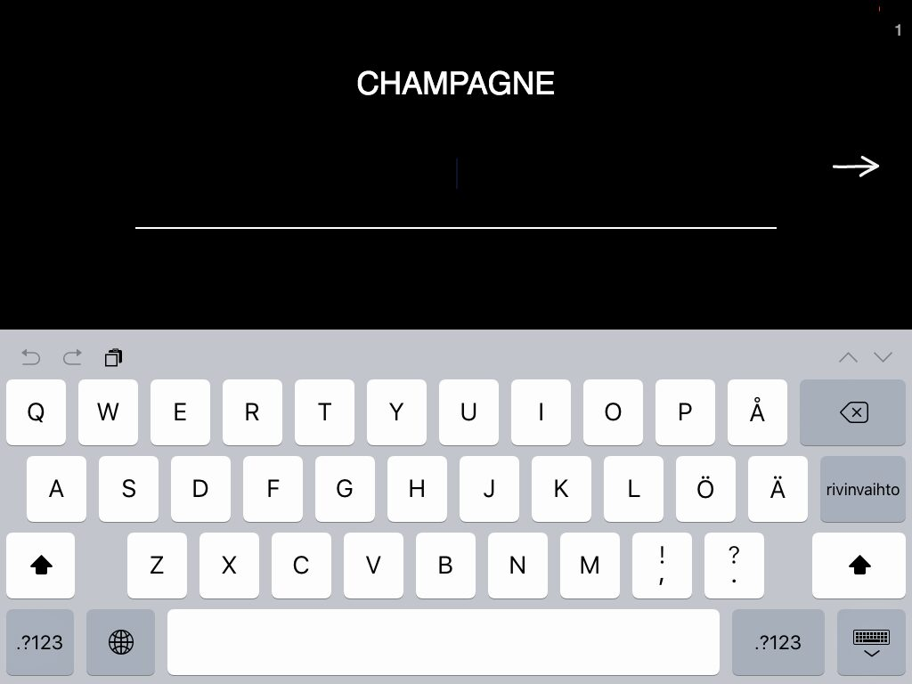
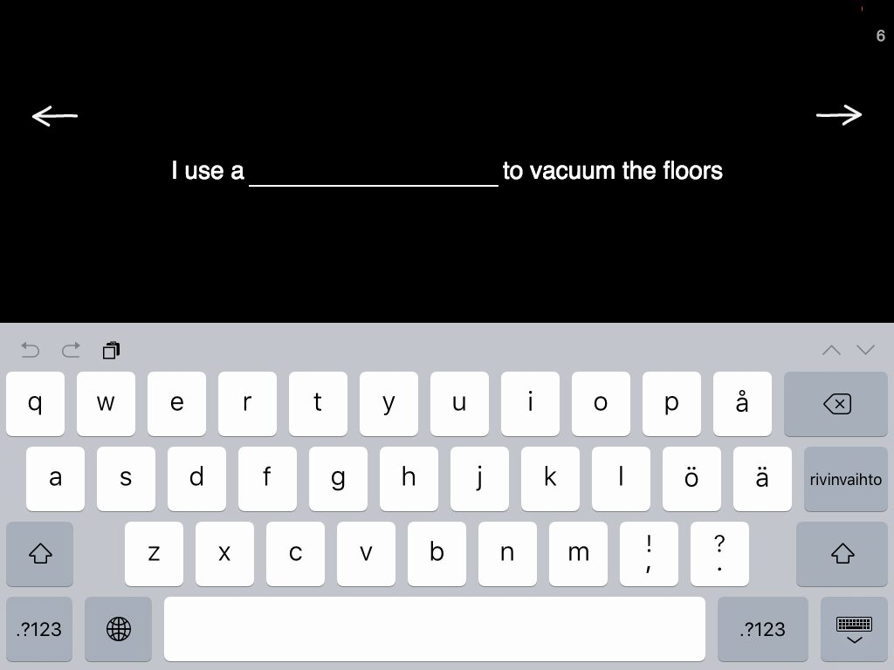
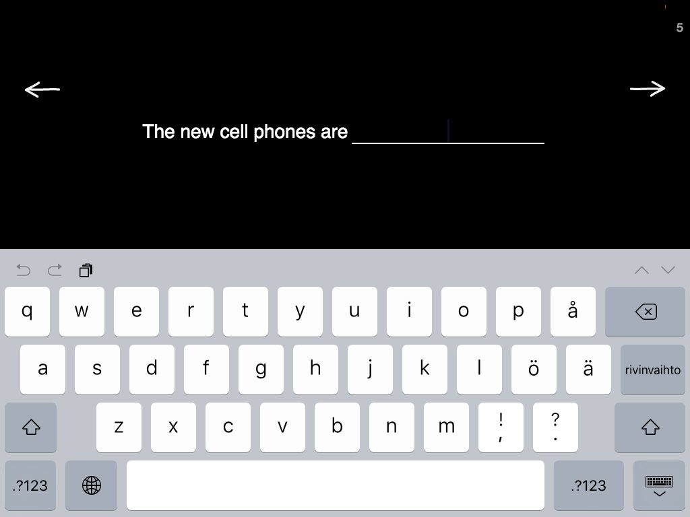
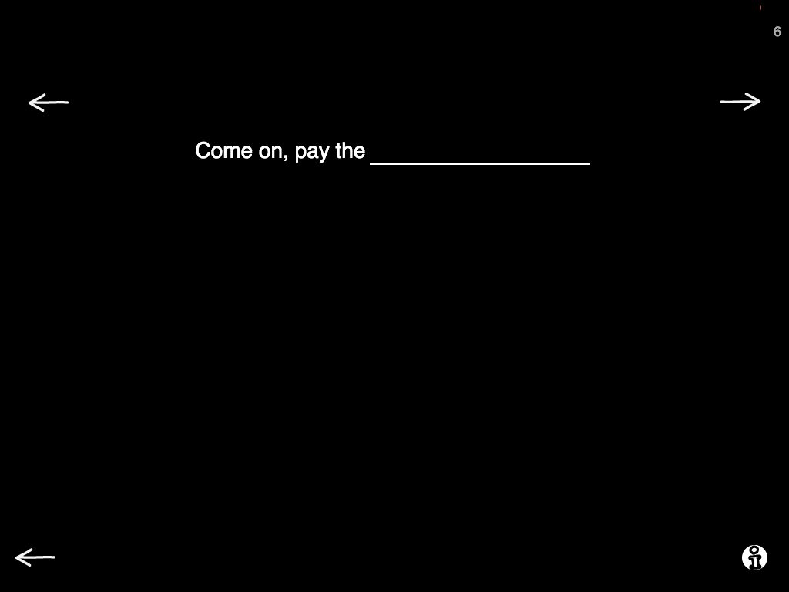
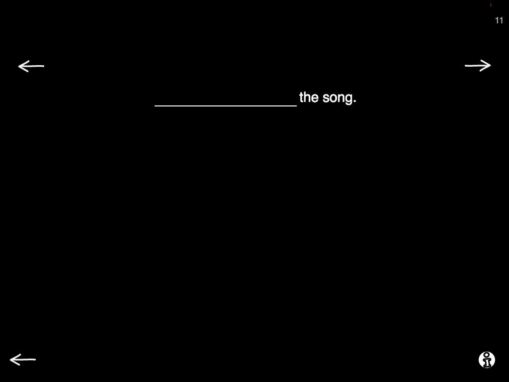
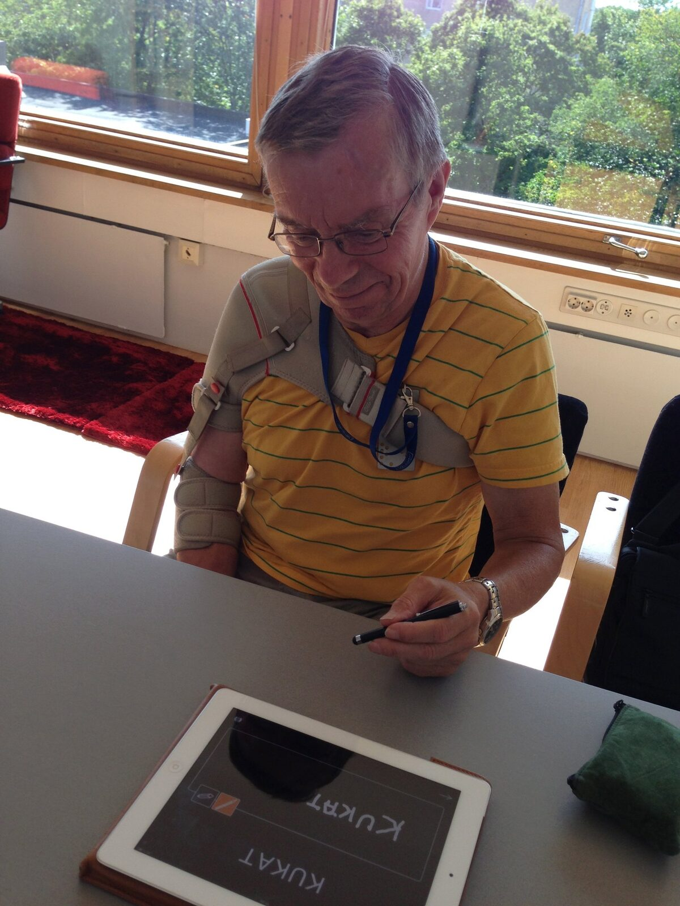

If I would have to name a personal favorite category from Sanapsis, I think it would be Writing (or wait, maybe Comprehension. Hmm. Well for this post, I'm going to go with Writing, so there you go).
I truly get a kick of the way the category seems just a straightforward Copy letter > Copy word > Write a word in context > Write a sentence > Write a synopsis -approach to writing. But when you look closely, you see a world of possibilities.

Our Writing menu

Let’s get started with Copy Letters. First of all this is an awesome task to get going on writing with the non-dominant hand (like many of our right-handed patients need to after a stroke).
On screen, you see a letter on the left. On the right you see the same letter faded. Now, ask your patient to and draw the faded letter with their finger. When they get comfortable, add a stylus pen and voilá - sooner than you know you have them rocking the whole paper/pen thing (this on one of my patients rocking the K)!
But why is he writing in blue? Since we are also working on expressing opinions by choosing things, we started by him expressing the color he would like to write with and me adjusting the settings for him. And today, he felt like he wanted to use blue for this writing task.

Settings on Copy a letter by hand
There is a number of things in the settings. The colors are there mostly for patients who have visual constrains and need stronger feedback from their writing. But why not use them for adding to the task, just like us SLP:s know how to!
You can also choose the level of cueing and some other cool stuff, just tap the info-button to find out more!

Copy words using the keyboard
Moving on to working with the keyboard. In Copy words using the keyboard you: a) see a word, b) copy it using a keyboard.
And, as usual, there is more than meets the eye. In settings you can choose a category for the words. The words match exercises Naming nouns in Production and Word and picture in Reading. With these exercises you have the same vocabulary at your fingertips for naming, reading and writing! Awesome, right? And as you can see in this example, the vocabulary has everything we need, as recent research findings suggest.
Then it is time for my all time favorite in this category, Fill in the blank. Again, pretty straightforward. You see sentence with a blank space, you ask your patient to fill that in. Now, please, please remember to take full advantage of the levels with this one!

Fill in the blank, level 1
Level 1 gives you a sentence with a noun missing. The sentence provides the context, thus a semantic clue for the word.
In this example the word would be: vacuum cleaner.

Fill in the blank, level 2
Level 2 challenges your patients to describe things, as the missing word is an adjective. Perfect for those patients who need lots of time for processing (they tend not to use too many adjectives in their output), and for patients who are generally were scarce in their output. This can also be very challenging for many higher level TBI patients, be sure to give it a try!

Fill in the blank, level 3
And finally, level 3. This is where things get interesting with many patients I have worked with. The sentences on this level have vary little information, they function more as constraints than clues for the patient. Here the patient is challenged to create the meaningful context within the frame of the task. And let me tell you - we have had some fun with this one! Also, a great discussion starter on why it can be a difficult task to complete.

Fill in the blank, level 3
I also encourage you to break away from the iPad with the tasks on Level 3. Give your patient paper and pen and ask them to fill in a couple of sentences on paper, just to write the whole sentence down. Then, have them expand one of the sentences to a little story (they already thought of an idea for the sentence, so why not take it a few steps further).
An example of this could be: Sentence: They did not have the song.
Story: Alice and his boyfriend loved to sing karaoke. Alice wanted to surprise her boyfriend and had been rehearsing his favorite song, "Yellow submarine", for a week. On Friday night at the karaoke bar Alice got up to perform, but they did not have the song!
Fun? Yes! Even more if you take turns in coming up with the stories, so you get to give examples and ideas within a task!

I still wanted to talk to you about Synopsis and how it has cool levels too and how you can change the background color from black to white to suit your patients needs. But I guess I have to leave something for you to discover on your own too!
So, I will leave you today with a picture of one of my patients rocking the word flowers in Finnish in Copy a word by hand.
Have fun and keep exploring!
P.S. We are celebrating ASHA15 with a huge discount! You can have these exercises and way more on your iPad for $49,99!